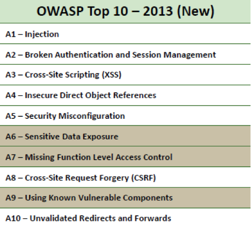
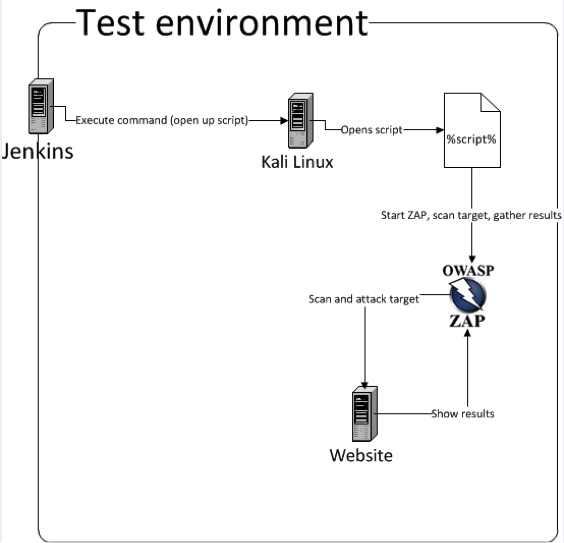

The demand for security tests within companies is increasing. These tests can be executed in different ways, each with its own pros and cons. In my opinion, nothing beats manual code review in combination with hands-on testing performed by an experienced security specialist. In an ideal situation a company would have a big team of these specialists performing continuous tests and reviews on every change made to applications. In reality most companies don’t have the resources to achieve this goal. Automated scans can offer a solution to quickly test applications. In this article I'll explain how to automate security tests using OWASP ZAP and Jenkins.
Like this blog? Read the follow up Using OWASP ZAP, Selenium, and Jenkins to automate your security tests
Obviously, one cannot fully rely on automated scans to find all vulnerabilities in applications. In addition there is always a security specialist needed to evaluate the results. I see automated scans as complementary to manual testing. Occasionally, it will find something you've missed while testing, other times it won't show anything.
Ideally, automated security scans should be integrated within the software development lifecycle of a company. Every time a developer makes changes or additions to an application, the security scans will start scanning for security related issues.
If an issue is identified, the development/security department should be notified (by email) about the issue. This creates a short feedback loop to the developers, which eventually will create more security awareness within the development department.
In theory a developer receives feedback of identified security issues within couple hours after submitting his/her code and updating the environment. However, I always advise that a security specialist evaluates & verifies if the identified issues are legitimate or false positives before the results are sent to developers.
Adding automated security tests to the software development lifecycle requires either to construct tests by hand or incorporate existing security tools, which can be automated. Web vulnerability scan tools like OWASP Zed Attack Proxy (ZAP) can be controlled in an automated manner and are therefore suitable for our automated security testing. OWASP ZAP is a free to use, open-source security application which can scan web applications for known security issues, like vulnerabilities included in the OWASP Top 10 security bugs.
Figure 1: OWASP Top 10 - 2013
The steps and scripts listed in this article can be used to add automated tests to a continuous integration server like Jenkins. If your company uses Jenkins to update applications, you can set up a script to run after a certain application is updated.
For convenience we'll be using Kali Linux, a Linux distribution targeted at pentesters. OWASP ZAP comes pre-installed on Kali Linux. Download and install Kali Linux on a server or download a VM from the following location: https://www.kali.org/downloads/.
We want Jenkins to connect to Kali over SSH. After the installation of Kali is finished, start the SSH server.
$ sudo service ssh start
If SSH is not installed yet, install it by entering following command on the console:
$ sudo apt-get install openssh-server
We can access OWASP ZAP through its Python API. Before we can use this API we need to build and install it. Download the API from the following location: http://sourceforge.net/projects/zaproxy/files/client-api/
Build the API using the following commands:
$ cd python/api/
$ python setup.py build
$ sudo python setup.py install
Next we'll create our Python script that invoke OWASP ZAP. Create a new file website-scan.py with the content listed below.
import time
from pprint import pprint
from zapv2 import ZAPv2 # Here the target is defined and an instance of ZAP is created.
target = 'http://www.target.site/'
zap = ZAPv2() # Use the line below if ZAP is not listening on 8090.
# zap = ZAPv2(proxies={'http': 'http://127.0.0.1:8090', 'https': 'http://127.0.0.1:9090'}) # ZAP starts accessing the target.
print 'Accessing target %s' % target
zap.urlopen(target)
time.sleep(2) # The spider starts crawling the website for URL’s
print 'Spidering target %s' % target
zap.spider.scan(target) # Progress of spider
time.sleep(2)
print 'Status %s' % zap.spider.status
while (int(zap.spider.status) < 100):
print 'Spider progress %: ' + zap.spider.status time.sleep(400) print 'Spider completed' # Give the passive scanner a chance to finish
time.sleep(5) # The active scanning starts
print 'Scanning target %s' % target
zap.ascan.scan(target)
while (int(zap.ascan.status) < 100):
print 'Scan progress %: ' + zap.ascan.status time.sleep(600) print 'Scan completed'#!/usr/bin/env python
This script starts off by defining the target URL. After setting the proxy details it will crawl (spider) the website to discover URL's on the target web application. When crawling is finished, it starts with an active scan to check for known vulnerabilities within the discovered URLs. It ends with printing the findings to the console.
The output can be overwhelming at first. To organize it to your needs, you can decide to remove (unwanted) items from the output using following Python code:
for element in alerts["alerts"]:
# Navigation alert, alerts contain a list which contains a dictionary
del element["description"]
del element["solution"]
del element["id"]
del element["messageId"]
del element["reliability"]
del element["other"]
del element["reference"]
del element["param”]
You can extend the script above to start a new instance of OWASP ZAP for each scan and to close it afterwards:
import os
import subprocess
print 'Starting ZAP ...'
subprocess.Popen(['/usr/share/zaproxy/zap.sh','-daemon'],stdout=open(os.devnull,'w'))
print 'Waiting for ZAP to load, 10 seconds ...'
time.sleep(10)
[...]
# To close ZAP:
zap.core.shutdown()
Use the following steps to start OWASP ZAP from Jenkins
1. Create a new 'Build a free-style software project' in Jenkins. 2. Add a new build step to project and select 'execute shell'. 3. Define the path to the python script, which you saved in Kali Linux. For example python /root/Desktop/website-scan.py.
For Jenkins to be able to access this machine and execute commands, Jenkins should authenticate with an SSH key to this machine. You can achieve this by copy-pasting Jenkins' public key in the authorized_keys file on Kali. After the key has been added, add the IP address of Kali Linux to 'Configuration>SSH Server' in Jenkins.
Figure 2: test environment setup
As an extra feature, you can implement a reporting functionality within Jenkins to automatically send emails when it detects medium or high security risk issues. To achieve this, install plugin 'text-finder' into Jenkins and add the following regex in the project:
.*(?i)high.*|.*(?i)medium.*
This plugin will check the output in Jenkins (where the alerts are generated) for medium or high risk vulnerabilities. If it finds any, the project's status is changed to 'unstable'. You can set the plugin email-ext from Jenkins to send an email to pre-defined recipients when the status of a project is 'unstable'.
Run the scans with a maximum amount of one per day. Security scanning with OWASP ZAP normally takes about 2.5 hours, whereas updating an application with new code takes about 15 minutes. Since applications can be updated multiple times a day, this could cause the scans to run slow. One scan a day is a good guideline, in theory developers will get feedback not more than 24 hours after they updated an application.
In conclusion, implementing automated security testing within your software development lifecycle is not that hard. This article shows how to create a simple setup using Kali, OWASP ZAP, and Jenkins.
I originally wrote this article for Securify B.V. Read more.